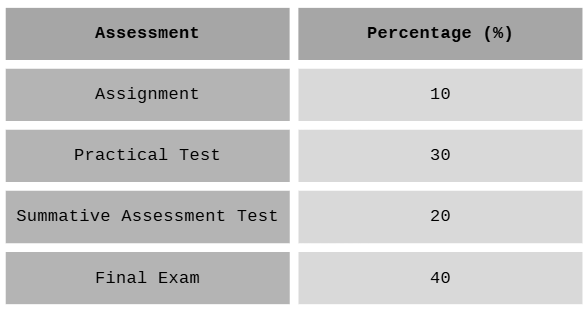

SC025 Course Information
Curriculum Specifications

Course Learning Outcomes
1.0 Introduction to Programming
- Define programming language, programming paradigm and language translators.
- Differentiate paradigms of programming language: procedural, object oriented and logic.
- Differentiate types of language translator: compiler, interpreter and assembler.
2.0 Approach in Problem Solving
- Describe steps in problem solving: problem analysis, design a solution, implementation, testing and documentation.
- Identify input, process, and output based on the given problem statement.
3.0 Design a Solution
- Describe algorithm: pseudocode and flowchart.
- Explain control structures (sequence, selection: single, dual, multiple, repetition: counter-controlled, sentinel controlled) using algorithms.
- Apply appropriate control structures in computational problem solving.
4.0 Java Language
4.1 Introduction to Java Program
- Describe Object-Oriented Programming
- Describe the components of a Java program: comments, class, main method, body.
- Use output and input statements including output String.
4.2 Identifiers, Data Type, Operators, and Expressions
- Identify identifier, variable, constant and reserved words.
- Identify various primitive data types: int, float, double, boolean and char.
- Differentiate primitive data types and their usage.
- Identify various operators: arithmetic, relational and logical.
- Identify various expressions: arithmetic, relational and logical.
- Determine the operator precedence and associativity of operators.
- Convert algebraic expressions into Java statements.
4.3 Use of Control Structure
- Construct program segments by using sequence control structure.
- Construct program segments by using selection control structure.
- Construct program segments by using repetition (while, for) counter-controlled or sentinel-controlled structure.
- Construct a program by using sequence control structure.
- Construct a program by using selection control structure.
- Construct a program by using repetition (while, for) counter-controlled or sentinel-controlled structure.
4.4 Arrays
- Explain an array and its components.
- Declare array reference variables and create an array.
- Access array elements - initialize, input, process and output.
- Construct programs that perform one-dimensional array operations for problems involving linear search.
- Construct programs that perform one-dimensional array operations for problems involving total and frequency.
4.5 Methods
4.5.1 Introduction to Java method
- Explain the meaning and advantages of method.
- Explain the types of method: predefined and user-defined.
4.5.2 Predefined method
- Identify the use of common predefined method: pow(x,y) and sqrt(x).
4.5.3 Static user-defined method
- Explain two (2) types of static user-defined methods.
- Explain the general structure of static user defined method: method header, method body.
- Write a method definition with return value, with or without formal parameters.
- Write a method definition without a return value, with or without formal parameters.
- Write a method call with a return value, with or without actual parameters.
- Write a method call with no return value, with or without actual parameters.
- Write a static user-defined method to perform simple computations.
4.6 Java Program
- Construct programs that perform one-dimensional array operations for problems involving average, maximum, minimum. [Exclude passing an array to a method]
- Write a program that performs one-dimensional array operations for problems involving average, maximum and minimum. [Exclude passing an array to a method]